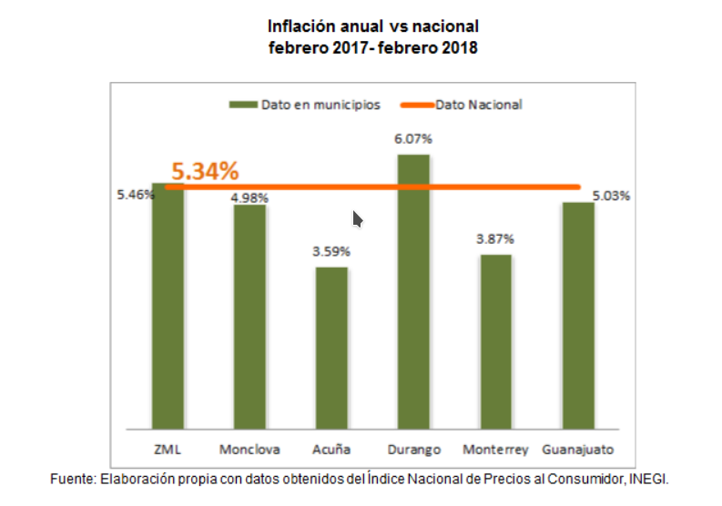

A pesar de que en 2017 se presentó un destacable crecimiento del salario, la alta inflación opacó el poder adquisitivo del país; especialmente en Torreón que fue una de las cinco ciudades con mayor inflación de México.
La inflación ha tenido un impacto en el salario de los laguneros. De acuerdo con el INEGI, en el primer trimestre de 2017 el salario mensual promedio de los laguneros ascendió a $6,983.93 pesos, pero por la inflación que fue de 4.4% el poder adquisitivo del sueldo fue prácticamente el mismo que en el trimestre anterior, de $6,775 pesos.
El crecimiento del salario en 2017 aparentemente fue de 8.33%, pero si tomamos en cuenta el alza de inflación durante este mismo periodo, se observa que el crecimiento real de los salarios fue de 7.39%.
La inflación es un indicador económico que permite estimar el cambio durante cierto periodo, en los precios de bienes y servicios que son consumidos por las familias de municipios, zonas metropolitanas e incluso de todo el país.
Torreón, es una de las 46 poblaciones urbanas de más de 20 mil habitantes, que forma parte de la muestra que INEGI toma para el cálculo del indicador. Por tanto, este municipio aporta cotizaciones o precios de productos específicos con la finalidad de incluir el impacto de las variaciones al Índice Nacional de Precios al Consumidor (INPC), dato necesario para el cálculo de la inflación.
Para efectos de este indicador, se considera la inflación de Torreón para toda la zona metropolitana, ya que es el único municipio de la región incluida por INEGI en el cálculo del INPC.
La inflación anual, es decir, la variación en precios con respecto a febrero de 2017 en La Laguna, fue de 5.46%. De los 6 municipios que forman parte de la muestra de INEGI por parte del estado de Coahuila como del estado de Durango y que aquí se comparan, solamente la Zona Metropolitana de La Laguna (ZML) y Durango superan el dato nacional con 0.12 y 0.73 puntos porcentuales. Por otro lado Acuña y Monterrey, son los municipios con menor inflación por 1.75 y 1.47 puntos porcentuales de diferencia. Durante los últimos 5 años, la inflación anual promedio en la ZML ha sido del 4.16% comparada con la nacional que se ubica en 4.06%.
Además, se ha podido observar que el cambio promedio que sufre la inflación de un año a otro, tomando en cuenta datos históricos de 5 años atrás, es casi el doble de lo que que ha sufrido la inflación nacional, 22.28%.
De acuerdo a la clasificación que hace INEGI por objeto del gasto, los apartados que concentran la mayor inflación de febrero de 2017 a febrero de 2018 en la ZML son: las frutas y hortalizas 14.09%, artículos de educación 11.95%, electricidad y combustible 11.89%, servicios médicos 10.82%, servicios de esparcimiento 9.26% y el uso de vehículos (gasolina, aceites, refacciones, servicios para el auto) 8.15%.
Crece producción y PIB
La inflación constantemente se produce por el mismo crecimiento de la economía: a mayor ingreso mayor gasto y a mayor gasto mayor inflación; aunque hay muchos otros factores que la generan. Por otro lado, una inflación excesiva puede resultar muy dañina para un país o una región, por lo que los Bancos Centrales mantienen entre sus funciones el mantenerla estable para favorecer la salud de la economía.
De acuerdo a las últimas estimaciones del Producto Interno Bruto (2015), la ZML ha mantenido un crecimiento sobresaliente comparado a otras ciudades; lo que irremediablemente termina generando una proporción de inflación saludable.
En 2015 el crecimiento de PIB estimado de la ciudad fue de 21%, mientras que la inflación figuró en un 1.67%; en contraste el país creció sólo 6.10% y su inflación fue de 2.13%. Sin embargo en 2017 la inflación en la ZML ha subido a niveles de hasta 8.30%, acercándose a un arriesgado nivel de dos dígitos; lo que resulta en la desconfianza de los consumidores, un menor poder adquisitivo, menor ahorro e inversión.
La alta inflación opacó el poder de compra en Torreón; sin embargo, el crecimiento de PIB estimado en el municipio indica que en parte la inflación está respaldada por una mayor producción. En los últimos años la inflación promedio de la ZML se ha ubicado ligeramente por encima de la Nacional y muy por arriba de la meta del 3% que tenía el Banco de México.
Los rubros que presentan mayor inflación corresponden a los relacionados con el transporte, la electricidad y el combustible, alimentos como pescados, mariscos, aceites y grasas, y la atención médica.


Apartados que concentran la mayor inflación de febrero de 2017 a febrero de 2018 en la ZML:
Las frutas y hortalizas 14.09%
Artículos de educación 11.95%
Electricidad y combustible 11.89%
Servicios médicos 10.82%
Servicios de esparcimiento 9.26%
Uso de vehículos (gasolina, aceites, refacciones, servicios para el auto) 8.15%.